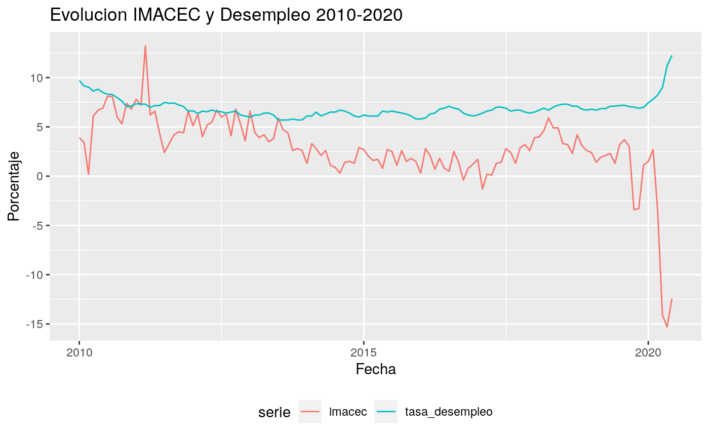

Esta vinieta pretende explicar como usar mindicador en una situacion real. Partire intentando ponerme en los zapatos de una periodista que esta escribiendo un reportaje sobre la evolucion de la economia chilena en el periodo 2010-2020. Me centrate en el IMACEC (Indice de Medicion de la Actividad Economica) y el desempleo.
Es posible obtener ambos indicadores de manera directa:
library(mindicador) library(ggplot2) library(readxl) # veo los codigos de ambos indicadores mindicador_indicadores #> nombre codigo unidad desde #> 1: Unidad de fomento (UF) uf Pesos 1977 #> 2: Indice de valor promedio (IVP) ivp Pesos 1990 #> 3: Dólar observado dolar Pesos 1984 #> 4: Dólar acuerdo dolar_intercambio Pesos 1988 #> 5: Euro euro Pesos 1999 #> 6: Indice de Precios al Consumidor (IPC) ipc Porcentaje 1928 #> 7: Unidad Tributaria Mensual (UTM) utm Pesos 1990 #> 8: Imacec imacec Porcentaje 1997 #> 9: Tasa Política Monetaria (TPM) tpm Porcentaje 2001 #> 10: Libra de Cobre libra_cobre Dólar 2012 #> 11: Tasa de desempleo tasa_desempleo Porcentaje 2009 #> 12: Bitcoin bitcoin Dólar 2009 # obtengo los datos datos <- mindicador_importar_datos(c("imacec", "tasa_desempleo"), 2010:2020) # veo los datos datos #> serie fecha valor #> 1: imacec 2010-12-01 6.80 #> 2: imacec 2010-11-01 7.40 #> 3: imacec 2010-10-01 5.30 #> 4: imacec 2010-09-01 6.00 #> 5: imacec 2010-08-01 8.10 #> --- #> 243: imacec 2020-02-01 2.70 #> 244: imacec 2020-01-01 1.50 #> 245: tasa_desempleo 2020-03-01 8.23 #> 246: tasa_desempleo 2020-02-01 7.81 #> 247: tasa_desempleo 2020-01-01 7.43
Simplemente para explorar visualmente lo obtenido:
# las dos series estan en la misma escala (porcentaje) asi que los puedo dejar en un mismo grafico ggplot(data = datos, aes(x = fecha, y = valor, color = serie)) + geom_line() + theme(legend.position = "bottom") + labs(title = "Evolucion IMACEC y Desempleo 2010-2020", x = "Fecha", y = "Porcentaje")
